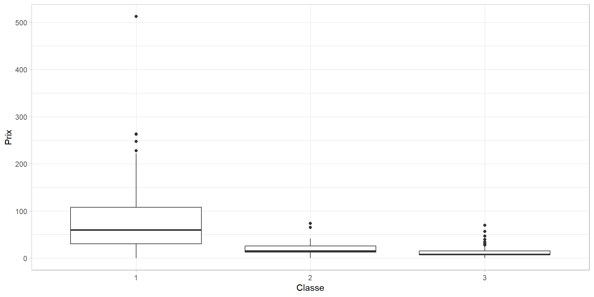

Ecole Nationale de la Statistique et de l’Analyse de l’Information
2024-11-19
Installation des packages
packages <-c("ggplot2","readxl", "gtsummary","kableExtra")#options(kableExtra.latex.load_packages = FALSE)##-- Boucle pour installer et charger les packagesfor (pkg in packages) {if (!requireNamespace(pkg, quietly =TRUE)) {install.packages(pkg, dependencies = T) }library(pkg, character.only =TRUE)}##-- FOnction pour titrer les et les tableaux avec des numeroscapTabNo =1; capFigNo =1;capTab =function(x){ x =paste0("Tableau ",capTabNo,". ",x) capTabNo <<- capTabNo +1 x}capFig =function(x){ x =paste0("Figure ",capFigNo,". ",x) capFigNo <<- capFigNo +1 x}repeated_capFig =function(x){ x =paste0(paste0(paste0("Figure ", capFigNo-1), ". "), x) x}
Exercice 1 (Rappels des sessions précédentes : on fait du R base !)
3- Chargement des bases de données
Pour charger le fichier avec la fonction readxl, il faut télécharger et installer le package readxl avec la commande install.packages(“readxl”).
id Classe Survie Prix
Length:1308 Min. :1.000 Min. :0.0000 Length:1308
Class :character 1st Qu.:2.000 1st Qu.:0.0000 Class :character
Mode :character Median :3.000 Median :0.0000 Mode :character
Mean :2.294 Mean :0.3823
3rd Qu.:3.000 3rd Qu.:1.0000
Max. :3.000 Max. :1.0000
PortEmbarq
Length:1308
Class :character
Mode :character
2-Résumé du dataframe titanic_place
Non car :
Le prix est une chaine charactère ici, alors que normalement il devrait être de classe numérique
La classe du billet est sous le format numérique alors qu’elle devrait être de classe character
La Survie est sous le format numérique alors qu’elle devrait être de classe character
3- Convertir la classe en character et le prix en numerique
Normalement, R s’ouvre là où vous l’avez laissé. Votre projet est relié à un dossier. En ouvrant un projet, le dossier auquel il est relié devient le répertoire de travail par défaut. Qu’est-ce que ça implique : Si vous voulez importer des données qui sont dans votre projet/dossier, vous n’avez pas besoin de préciser le chemin. Illustration avec la question suivante !
13- Table “id14_15_16” contenant les individus “id14”, id15” et “id16”
id14_15_16 <- df1[df1$id %in%c("id14", "id15", "id16"),]id14_15_16$Prix <-as.factor(id14_15_16$Prix)knitr::kable(id14_15_16,caption ="Les individus avec les id 14, 15 et 16")
Les individus avec les id 14, 15 et 16
id
Classe
Survie
Prix
PortEmbarq
id14
1
1
78.85
S
id15
1
1
30
S
id16
1
0
25.925
S
14- Convertir le Prix en numérique. Quel est maintenant le prix payé par nos individus ?
knitr::kable(id14_15_16,caption ="Les individus avec les id 14, 15 et 16")
Les individus avec les id 14, 15 et 16
id
Classe
Survie
Prix
PortEmbarq
id14
1
1
78.850
S
id15
1
1
30.000
S
id16
1
0
25.925
S
Ici ce sont les niveaux (levels) qui sont cponvertis en numérique et pas les charactères.
15- supprimer la table “id14_15_16” de l’environnement”
rm(id14_15_16) ##-- remove(id_14_15_16)
16- supprimer la table “id14_15_16” de l’environnement”
id14_15_16 <- df1[df1$id %in%c("id14", "id15", "id16"),]id14_15_16$Prix <-as.numeric(as.character(id14_15_16$Prix))knitr::kable(id14_15_16,caption ="Les individus avec les id 14, 15 et 16", align =c("r","l","l","l","l"))
Les individus avec les id 14, 15 et 16
id
Classe
Survie
Prix
PortEmbarq
id14
1
1
78.850
S
id15
1
1
30.000
S
id16
1
0
25.925
S
Rajout de données : fusion puis nettoyage
17- Reprenons la table “titanic_client”, y a-t-il des doublons ? Si oui, les enlever. Convertir également la variable Age en numérique
Il y a 263 valeurs manquantes pour la variable Age.
19- Créer la table “titanic_svm” qui contiendra uniquement les observations pour lesquelles l’âge est renseigné.
titanic_svm <- data.merged[-index.na.age,]
20- Créer une variable Sexe qui comportera 2 modalités “Homme” et “Femme”
hommes <-c("ColM", "DrM", "Master", "Mr")titanic_svm$Sexe <-ifelse( titanic_svm$Civilite %in% hommes,"Homme","Femme")
Idée : Je crée d’abord le vecteurs des civilités distinctes pour les hommes ensuite on crée la variable avec la fonction ifelse. On vérifie si la civilité est fait partir des civilités distinctes créées pour les hommes, si oui on Sexe prend la valeur Homme sinon Sexe prend la valeur femme.
21- Calculer l’âge moyen des passagers puis l’âge moyen par sexe.
age.moyen.par.sexe <-aggregate( Age ~ Sexe,data = titanic_svm,FUN = mean)
21- Calculer l’âge moyen des passagers puis l’âge moyen par sexe.
knitr::kable(age.moyen.par.sexe,caption ="Age moyen des individus selon la classe")
Age moyen des individus selon la classe
Sexe
Age
Femme
29.24274
Homme
30.23263
22- Faire un boxplot croisant la variable de prix du billet selon la Classe.

Figure 2. Dsitribution du prix du billet selon la classe
23- Donnez le nombre de survivants hommes selon la classe d’embarquement.